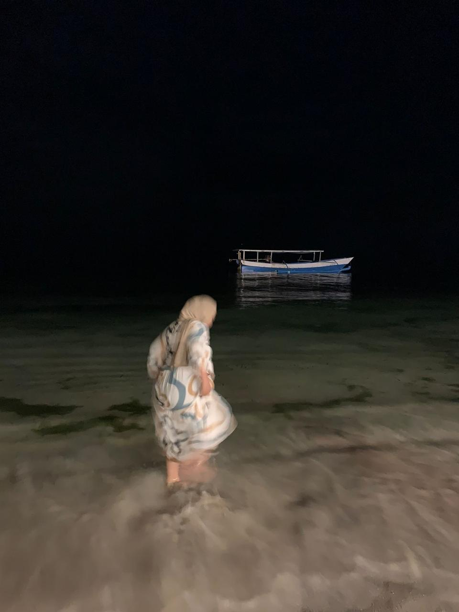

HAIII KENAL PUPUT
HAIII KENAL PUPUT
LEBIH DALAM YUUU
A Glimpse of Me
Saya Puput Aprianti, berdomisili di Kota Palu. Sebagai anak pertama dari dua bersaudara, saya terbiasa belajar bertanggung jawab dan mandiri sejak dini. Saat ini saya sedang menempuh pendidikan di bidang Information Technology, sebuah proses yang membentuk cara berpikir saya agar lebih logis, adaptif, dan terbuka terhadap perubahan.
Where Music Began
Slow Living & Healing Moments
Dreams in Progress
mau tau lebih dalam lagi? yuuu ke instagram aja🙆🏼♀️